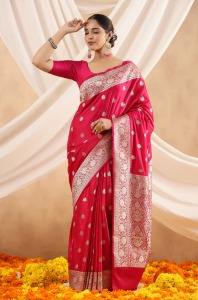

The Kosa Silk Saree
The Kosa Silk Saree is one of the most prized garments in Damans, known for its luxurious texture and elegant appearance. Made from Kosa silk, which is a variety of Tussar silk, this saree has a distinct natural golden-brown hue, giving it a royal and sophisticated look. The fabric is handwoven in the Champa region and is highly sought after for both everyday use and special occasions, such as weddings and festivals. The Kosa Silk Saree : is known for its durability and softness, making it a popular choice for formal events. The intricate motifs, often inspired by nature, add to its beauty. These sarees are traditionally worn by women and are often passed down as family heirlooms, reflecting the deep cultural roots of the Damans region.